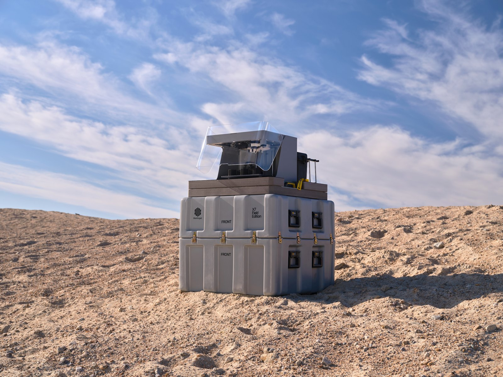
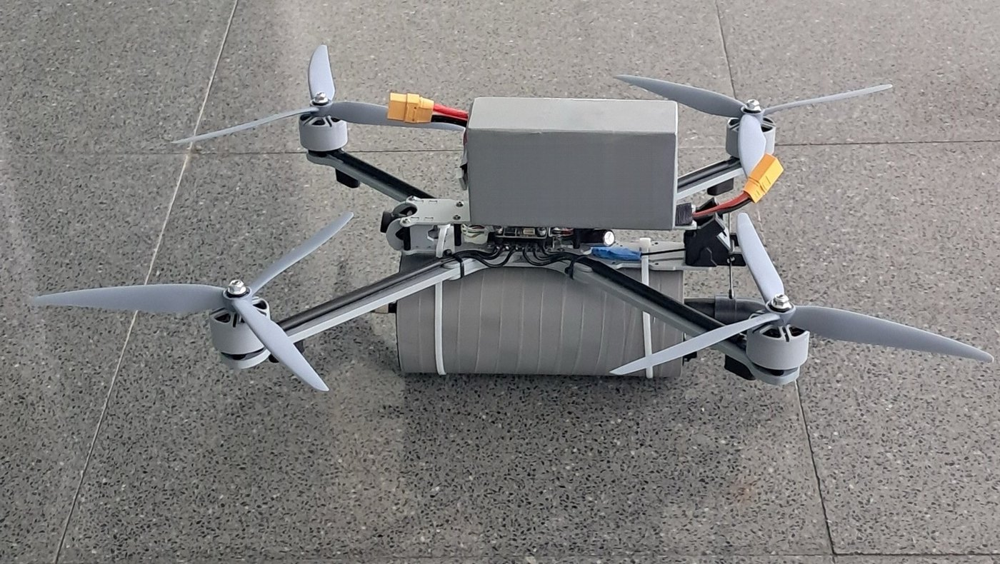
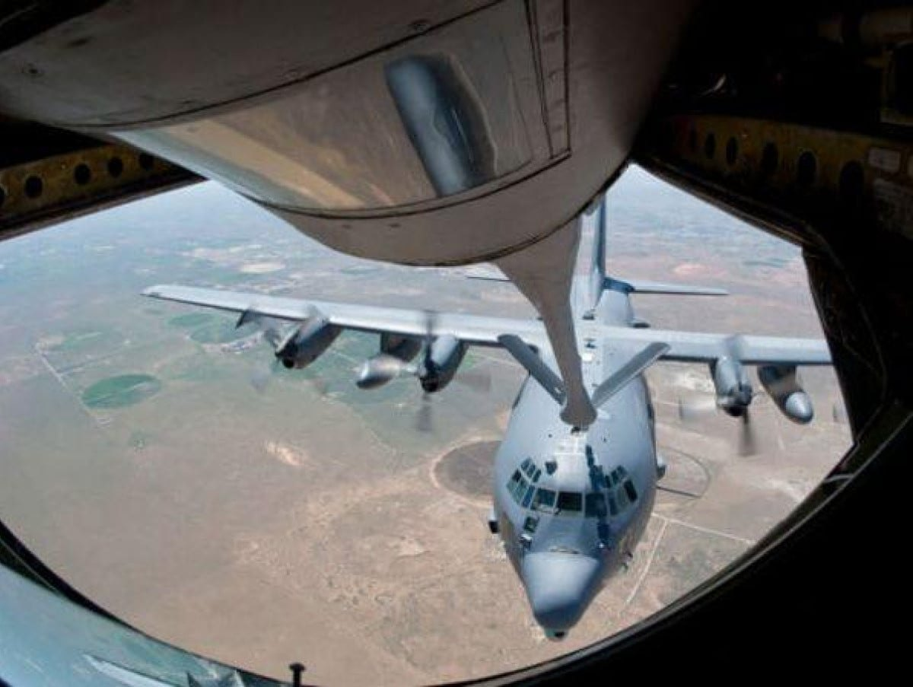
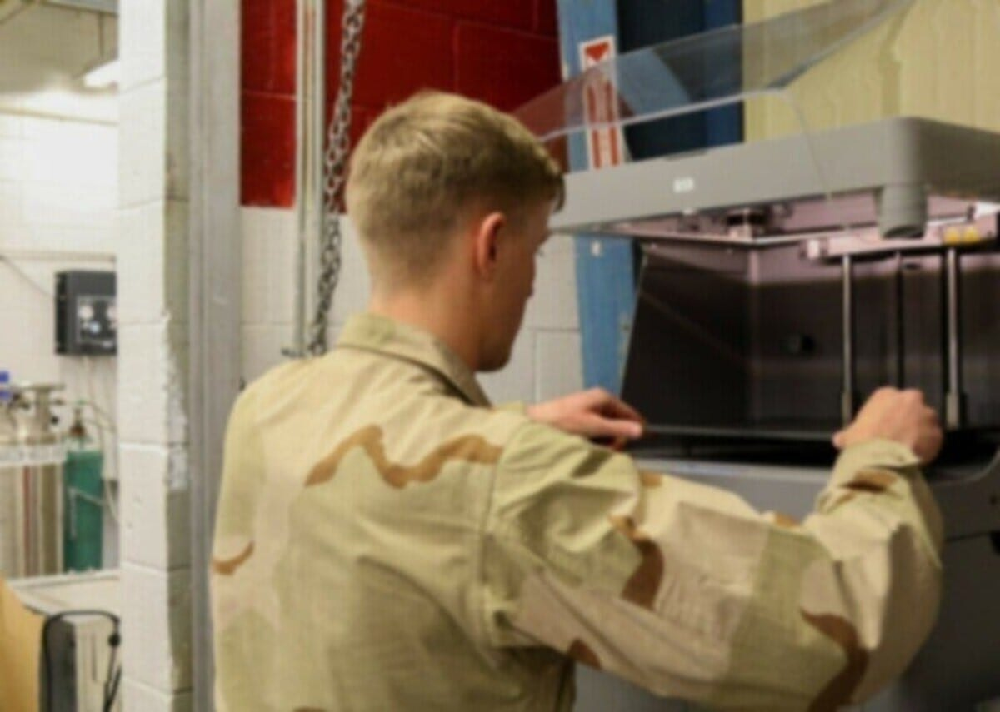
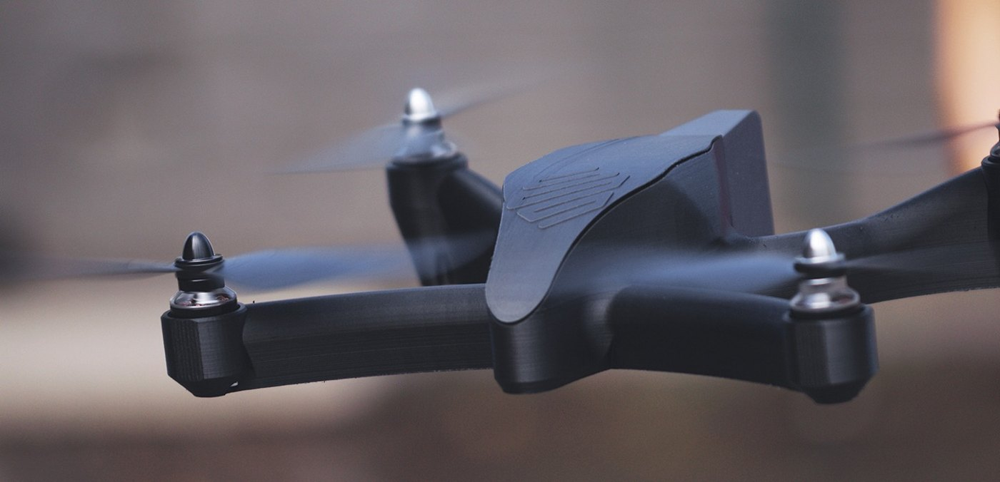
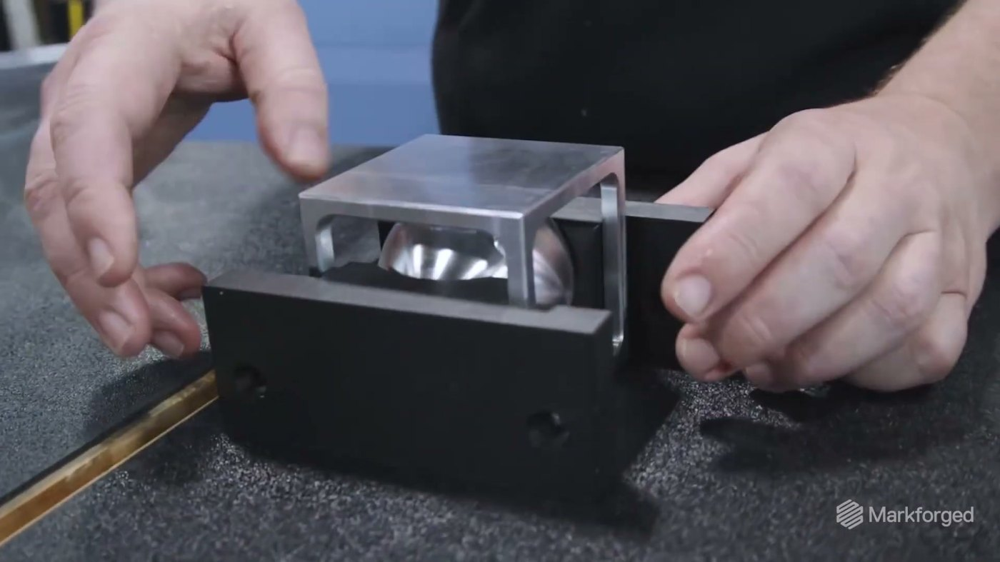
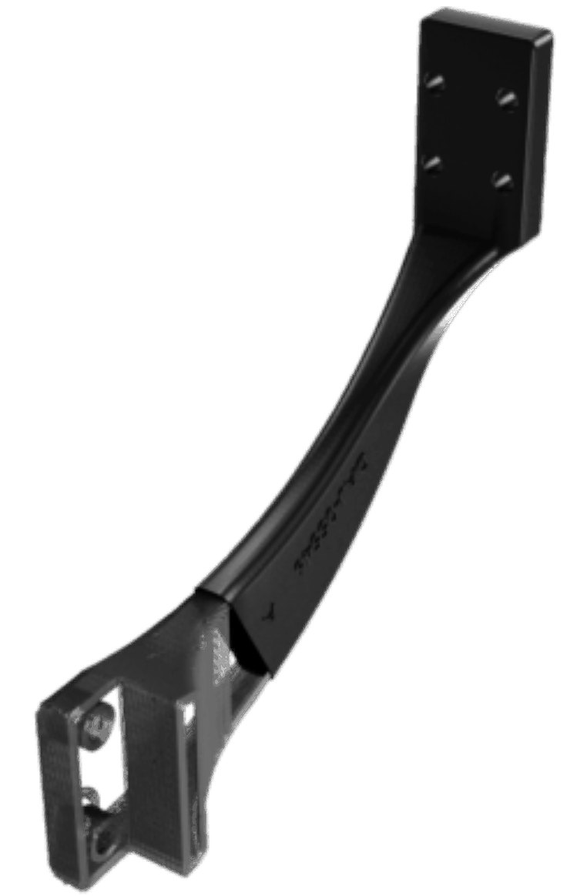
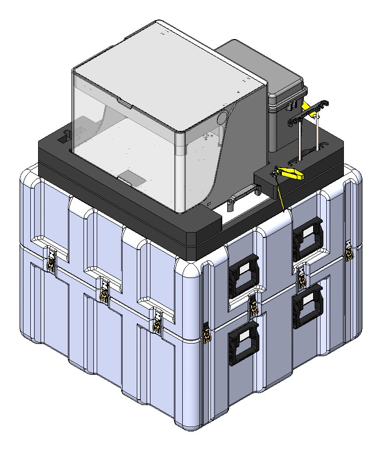

Greater China

經得起拆檢嗎？
重點摘要
- 這幾起案件的產地文件都交了，是軍方驗收拆檢才發現晶片來自大陸。紙上審查擋得住疏失，擋不住刻意造假。
- 非紅要過三道驗證：紙上、拆開、改版之後。第三道最容易漏，因為無人機每一季都在改。
- 改得最勤的結構件、夾治具與備品，留在場內、用來源單純的設備與材料自己做，第三道要重驗的範圍就小得多。
這兩個月被移送偵辦的軍用無人機，沒有一架是在文件審查被擋下的。契約寫明不得使用大陸地區產製的產品，產地文件也都交了；最後是軍方驗收時拆開機身，看到晶片上印著「CN」，才報請檢方偵辦。紙上那一關，它們早就過了。
非紅不是一張證明。
是一條拆開來也對得上的供應鏈。
NEWS · 這兩個月發生的事
三家廠商、三個地檢署，同一種發現方式
8 月到 10 月，至少三家廠商因為把陸製晶片、飛控板或鏡頭裝進交給國軍的無人機，分別遭橋頭、桃園、台中地檢署偵辦，其中兩家的負責人已遭羈押（聯合報，10 月 29 日）。這些都還是偵查中的指控，尚未經法院認定。
政策並沒有因此鬆動。副總統今年 1 月在嘉義表示，政府的無人機產製與採購，無論軍方或公部門，都必須達到百分之百非紅供應鏈（中時新聞網）。預算、訂單與政策同時往前推，查核只會越來越嚴。
這幾起案件真正值得產業注意的，不是有誰違規，而是問題在哪一個環節才被發現。
HISTORY · 事後拆，比事前驗貴
美國拆除華為設備，實際花費是原預算的 2.6 倍
美國 2019 會計年度國防授權法第 889 條點名華為與中興。2020 年再立法，由政府出資補助電信業者，把已經裝在網路上的這兩家設備拆除換新，計畫通稱 rip and replace。
這筆帳的重點在順序，不在金額。設備裝上去之前確認來源，花的是採購流程的時間；裝上去、跑起來之後才發現，花的是拆除、重新設計、停機，以及整套系統重新驗證。
台灣的無人機產業，現在還在設備裝上去之前的階段。現在把驗證做對，成本最低。
FRAMEWORK · 三道驗證
非紅要過三道關，第三道最容易漏
把這幾起案件攤開來看，非紅其實是三道驗證，一道比一道難。
第一道是文件。產地證明、契約條款、供應商聲明。它擋得住疏失，擋不住刻意的假。這次的案件，文件都交了。
第二道是實物。拆開來，晶片上的字不會說謊。但拆檢是抽樣，而且只驗交貨當下的那一批。
第三道是時間。無人機不是定型產品，是每一季都在改的平台。機臂加長、換一顆馬達、某個料號停產，每一次變更都會帶進新的零件與新的供應商，前兩道就得重來一次。交期壓力最大、最容易找捷徑的，也正是這一刻。
MARKET · 國內與海外
國內已是門檻，海外還是加分，兩邊在第三道會合
國軍契約已經把非紅寫成門檻，違反要負刑責，第一道與第二道只會越收越緊。
出口端的情況不同。捷克今年第一季成為台灣無人機最大出口市場，但捷克投資局的說法是，歐洲採購目前把非紅當成偏好，還不是硬性規定；在烏克蘭前線，買家看的仍是數量、價格與交期（科技新報）。同一篇報導裡，烏克蘭國民警衛隊的聯絡官舉了一個例子：
兩種買家最後會在第三道會合。國軍要的是一年後、改了三版之後依然非紅；海外整機廠要的是改版速度跟得上戰場。改版之後還拿得出證明，又不必為了換料源重跑一輪供應商審核，才同時過得了兩邊。
CASE · 一個停產零件
重新找供應商，還是在場內做
美國陸軍一處訓練基地的車輛上，有一個艙口塞停產了。重新製作一個約 1 萬美元，交期三個月——也就是重新找一家供應商、重新驗一次來源、重新排一次產能。
基地改用 Markforged 印表機，以 Onyx 複合材料在基地內列印，成本約 230 美元，原本十個零件的設計也簡化成四個；光這一項應用就省下 24.4 萬美元（Markforged 官方案例）。
- 重新詢價、等排程
- 多一份產地文件要驗
- 下次改版再來一次
- 設備與材料來源已確認
- 只多一份材料批號紀錄
- 改版後照自己的排程出件
從非紅的角度看，省錢是次要的。原本要多出一家外部供應商、多一份要驗的產地文件；現在是場內一台已經驗過的設備，加上一份材料批號紀錄。第三道要重驗的對象，從一家陌生的新供應商，縮成一個早就驗過的平台。
CASES · 各國軍方與無人機案例
同一個邏輯，已經在各國軍方與台灣發生
以下案例依國家與軍種整理，每一則都附原始出處：軍方或媒體的原文、Markforged 官方案例，以及 Markforged 媒體中心的完整報導。






WHERE · 從哪裡開始
改得最勤的三類零件
無人機整機廠與一階供應商，改版最頻繁、最常臨時外包的，集中在三類零件。它們的共同點是量小、改得勤、交期急，也是來源最容易說不清楚的地方。



把這三類留在場內，用來源單純的設備與材料自己做，第三道驗證要重驗的範圍就小得多；改版週期縮短，交期壓力下找捷徑的誘因也跟著消失。
WHY MARKFORGED · 優勢、資安與好處
非紅、資安、可部署：把改版留在自己的場域
面對國防與高資安場域，Markforged 的重點不在機台規格，而在讓客戶在自己的場域、用自己的權限，把改版後的零件做出來，而且每一個環節都說得清楚來源。
帶來的好處
- 少一家外部供應商要驗，第三道驗證的範圍變小
- 改版照自己的排程出件，不必等外包排程
- 停產零件可以在場內重做，不必重新找料源
- 設計檔不離開自己的場域
其中最常被要求到現場的，是 X7 Field Edition：

- 整機收納於 Pelican 強固運輸箱，兩人即可搬運
- 功耗 150 W，可由發電機供電
- 納入美軍執行的 MIL-STD-810 測試（美國國防部列裝計畫）
- 作業系統符合 STIG；另有無 Wi-Fi 版本供保密場域使用
- 連續碳纖維強化，拉伸強度 800 MPa
已經有工廠的整機廠與一階供應商，同一套連續纖維技術也有產線型號（X7、FX10、FX20），通常從夾治具開始導入，再延伸到結構件與備品。
CONCLUSION · 現在就能做的一件事
從最近一次改版開始
挑一架現役機型，把最近一次改版新增或替換的料號列出來，逐一確認兩件事：這一顆的產地證明，拆開來對不對得上；下個月它如果停產，替代料要從哪裡來。
改版之後拿不出新的證明，就只過了第一道。
先做一份兩分鐘的自我檢核
下面十題，交卷後會直接告訴您目前停在第幾道驗證，以及對應的建議。需要的話，Markforged 團隊可以到廠協助盤點：結構件、夾治具與備品，哪些適合留在場內做。
- 結構件與夾治具的改版頻率與外包占比
- 替代料與停產零件的來源盤點
- 國防與高資安場域的離線部署配置
SELF-CHECK · 自我檢核
無人機非紅供應鏈自我檢核
十題，約兩分鐘。交卷後立即顯示您停在第幾道驗證，以及三條對應的建議；我們會在 3 個工作天內與您聯繫，討論是否需要到廠盤點。
- 聯合報（2026-10-29）：非紅供應鏈再破功！涉用陸製晶片供軍方
- 中時新聞網（2026-01-28）：副總統參訪嘉義亞洲無人機 AI 創新應用研發中心
- 工商時報（2026-02-15）：442 億砸下去！台灣無人機起飛？「非紅供應鏈」成最大關鍵字
- 科技新報（2026-10-24）：「非紅」標籤只是加分，台灣無人機突圍須先擠進大廠供應鏈
- Congressional Research Service IN11663：FCC Secure and Trusted Communications Networks Reimbursement Program
- Markforged 官方案例：United States Army
- Markforged 官方產品頁：X7 Field Edition
- Markforged 官方資安說明（Security）
- Markforged ISO/IEC 27001:2022 證書